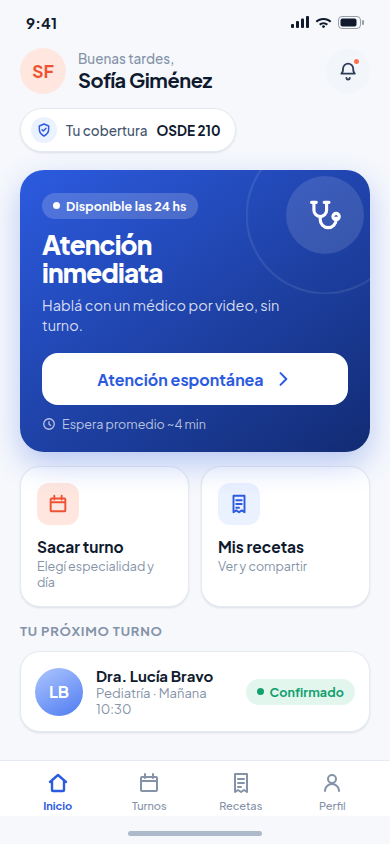
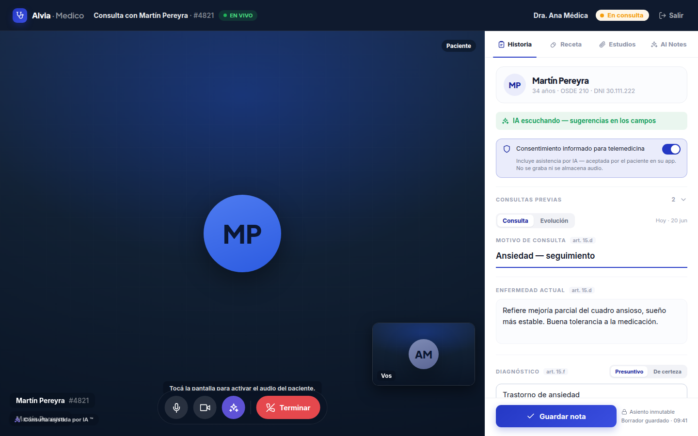

Horas médico que quedan ociosas
Tus consultorios propios tienen huecos de agenda. Son profesionales que ya están en tu estructura de costos, sin generar atención en ese tiempo libre.
Telemedicina para organizaciones de salud
Dale a tus afiliados un médico a un toque. Tus especialistas atienden por video, dentro de tu red y bajo tus normas. Sin sumar estructura.
Para prepagas, obras sociales, clínicas, empresas y gobiernos.


El problema
Tus consultorios propios tienen huecos de agenda. Son profesionales que ya están en tu estructura de costos, sin generar atención en ese tiempo libre.
La consulta de baja complejidad llena la guardia física, el recurso más caro de operar. Demoras, equipo sobrecargado y un gasto difícil de contener.
La solución
Alvia hace funcionar la capacidad que ya tenés: tus especialistas atienden por video a tus afiliados, dentro de tu red y bajo tus normas.
Modo 1 · Médicos propios
Conectá a los especialistas y superespecialistas que ya tenés contratados. Convertí sus horas disponibles en atención online.
Modo 2 · Llave en mano
Si preferís no sumar estructura, nuestra guardia 24/7 y nuestros especialistas atienden a tus afiliados desde el día uno.
Lo que gana el financiador
Tus afiliados acceden a especialistas y superespecialistas de tu propia red.
Al concentrar la demanda en tu red y tus normas, baja la sobreprestación y el gasto.
Tus especialistas completan su tiempo ocioso con consultas online a tus afiliados.
El diferencial
Las reglas de tu cobertura se aplican antes, durante y después de la consulta.
01 · Identidad
Para las coberturas que no manejan código propio, el afiliado realiza una prueba de vida por cámara antes de la consulta.
Tu cobertura PLAN ORO no usa código. Validamos tu identidad con una foto.
02 · Autorización
Cuando la obra social maneja códigos, el afiliado los ingresa antes de la consulta. Solo accede a la atención quien la cobertura autoriza.

03 · Copagos
El afiliado paga el importe definido por su cobertura antes de ingresar. La atención empieza con la validación y el cobro resueltos.

04 · Prescripción
El profesional prescribe dentro del vademécum habilitado para ese afiliado. La receta se emite y llega al paciente al instante.

Del lado del médico
Mientras atiende por video, el profesional tiene a mano la historia clínica del afiliado y emite la receta electrónica sin cambiar de pantalla. Menos fricción, mejor registro.
Producto real
Video, historia clínica, cobertura, documentación y prescripción en una misma consola.

Cómo opera
Sumás a tus médicos y cargás las normas de tu cobertura: autorizaciones, copagos y vademécum.
Acceden a la guardia 24/7 y a turnos con especialistas, validados contra tu padrón en cada consulta.
Cada consulta queda trazada, con comprobante, copago cobrado y receta dentro de norma.


Seguridad y cumplimiento
Cada interacción queda trazada y disponible para auditoría. Vos definís las reglas; Alvia las cumple.
Información clínica protegida en tránsito y en reposo.
Registro auditable de cada consulta, conforme a la normativa argentina.
Emisión digital con respaldo legal, lista para la farmacia.
Las reglas de tu cobertura, aplicadas en cada atención.
Para quién
Un beneficio diferencial para tus planes. Más valor percibido, menos uso de guardias presenciales.
Acceso real para afiliados en todo el país, incluso donde no hay cartilla cerca. Autorizaciones integradas.
Descomprimí tu guardia presencial. Derivá la baja complejidad a video y liberá camas y profesionales.
Un beneficio de salud que tu equipo usa de verdad. Menos ausentismo, atención sin salir de la oficina.
Cobertura de salud pública a escala territorial, con trazabilidad del gasto y reportes de gestión.
Empecemos
Agendá una demo. Te mostramos el producto y armamos un piloto para tu cartera.